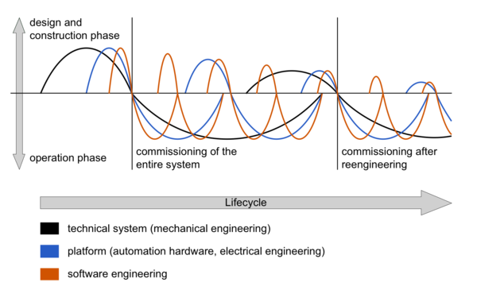

DFG SPP1593: Design For Future - Managed Software Evolution
The DFG Priority Programme 1593 (SPP1593) has been established to develop fundamentally new approaches in software engineering with a determined focus on long-living software systems. Existing research in software engineering does not solve the severe current problems with legacy software, the adaption of software to new platforms and the continuous evolution of software systems with respect to continuously changing requirements, new emerging technologies, and integration of new software, hardware and system components. These challenges during the whole lifecycle of software systems is depicted below.
|  |
Challenges in Software System Evolution
Technical systems' evolution includes both design and construction phases as well as operation phases and involves different disciplines. After having completed the initial design and construction phase, which starts with construction of the technical system followed by designing the platform, e.g. electrical hardware, and then designing the software, the commissioning of the entire system starts, followed by its operation phase. Design and construction phases of the technical system take longer than designing the platform and software, as adaptions in hardware involve more resources than adapting software parts; furthermore, the system's physical representation, i.e. technical system and platform, is often operated many years, resulting in a shorter change frequency than in software engineering. As changes, adaptations and updates may be necessary parts of the system may have to be shut down in order to commission the re-engineered system.
Approach of SPP1593
New foundations, methods and tools are needed to be able to develop “forever young software” which maintains its initial functionality and quality and is even continuously improved during the whole lifetime. We intend to develop a methodology for the continuous evolution of software and software/hardware systems, thus making systems adaptable to changing requirements and environments.
In the discipline of software engineering, several fields are especially suited to contribute to this goal. Without claiming completeness, existing approaches for requirements engineering, architecture design and management, model-based and model-driven software engineering, quality management, artefact management and evolution, and reengineering already have a strong impact on managing software evolution. However, these approaches need to be further developed and integrated with a special focus on long-living software systems. A new paradigm will be established where development, adaptation and evolution of software and their platforms on the one hand as well as operation, monitoring and maintenance on the other hand are no longer separated but integrated (see Research Structure). The aim is to define meta-models for preserving and accessing the knowledge provided and gained during the system development process. Furthermore, methods and process models, as well as suitable infrastructures, have to be provided to comprehensively support the integration of software development and evolution.
In this research programme we do not intend to explore approaches isolated from application. We focus here on two application domains: information systems and production systems in automation engineering. In information systems, huge data bases and applications need to be managed over long periods. In production systems in automation engineering, long-running complex software/hardware systems need to be engineered, maintained and improved efficiently even at operation.
The Priority Programme 1593 was initiated by Ursula Goltz, Gregor Engels, Michael Goedicke, Wilhelm Hasselbring, Andreas Rausch, and Birgit Vogel-Heuser.
[1] Li, F.; Bayrak, G.; Kernschmidt, K.; Vogel-Heuser, B.: Specification of the Requirements to Support Information Technology-Cycles in the Machine and Plant Manufacturing Industry. In: 14th IFAC Symposium on Information Control Problems in Manufacturing (INCOM12), Bucharest, Romania, 2012.